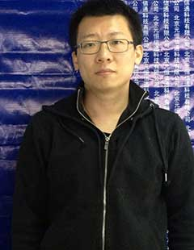

All lecturers 所有讲师查看列表 >
-

曹理博
职业素养培训师
拥有超过十年的丰富的管理工作经验。自2006年始，为国内众多知名企业及政府机构、事业单位提供培训与大型演讲，课程注重把西方管理理论实践与中国实际国情文化相结合，以个人管理实战及管理咨询经验和扎实的理论功底为基础，实际案例为载体，有效帮助客户机构加深管理认知、改善管理结构，完善管理方法以致客户机构提高盈利状况、客户满意度，整体提升运作效率。了解更多>
-

付宁
PDP企业管理教练认证培训师、咨询师
基于长达十四年的一线销售及团队管理工作经验，付宁老师凭借其出色的语言功底、风趣的授课风格、灵活的教学形式、严谨的课程架构并融合针对性的课程设计内容，满足了不同行业客户在提升管理技能、销售技能,服务技能等方面多元化需求。其幽默风趣、因材并因人施教的高度适应性教学方式也同时博得了所服务的企事业单位（公司）的一致认可。了解更多>
-
高剑
高级体验式培训讲师/高级人力资源管理师
针对个人或团队解决问题的行为，以游戏、练习、分享及有组织的互动，在学员主动参与学习的过程中，从体验中获得有意义、相关的收获。设计活动，介绍、呈现、运用及反映出当下学员所学。体验、分享、交流、整合、应用，最后将体验联系在工作中。 了解更多>
-
郭剑华
著名的商务礼仪高级培训师
培训风格严谨、认真，不失亲和力。将授课与专题研讨、案例分析、分组比赛等多元化方式结合，学员在参与过程中融汇贯通，讲课气氛活跃。了解更多>
-

刘峰
职业素养培训师
12年互联网从业经验，互联网第一批产品经理。曾在新浪、盛大、网元圣唐等多家公司内部创业互联网门户、平台和SNS社区项目，对互联网、互联网管理与团队建设、互联网营销、互联网产品、互联网用户体验有深刻的理解。了解更多>
-
马作宽
中国营销战略第一人
主要研究方向为组织运行管理、市场营销与战略规划，他的理论研究侧重于实务及应用，并根据其多年理论与实践经验提出了一系列具有实际指导意义的管理理论和模式：如组织凝聚力的建设方法、组织激励方法等切实可行的实战理论了解更多>
-

王景江
资深财务专家
➢ 著名财税和管理咨询专家、职业培训师、中国注册会计师；企业财务执行力网首席培训师，北京托众管理咨询有限公司总经理、首席财务咨询顾问，北京同道兴会计师事务所合伙人。我国最早加盟国际会计公司从事管理咨询的专家之一 ，是集职业经理、咨询顾问和高校教授于一身的财税和管理咨询专家，具有20多年的企业实践、教学经验、理论研究、企业审计和管理咨询背景。了解更多>
-

温兆文
中国企业财务管理实战派“头牌讲师”
➢ 有很深的理论功底，三十二篇有关审计、会计、经济类的文章在《经济日报》，《人民日报》，《光明日报》等十几种国家及省级报刊杂志上发表，两篇分别获全国论文特等奖。课程涉及《国际规范预算管理》、《财务分析与控制》、《内部控制与业务流程优化》、《非财务人员财务管理技能训练》、《财务团队建设和心智拓展训练》等。可熟练使用英文授课。了解更多>
-

张建
互联网信息技术资深培训师
北京优世瑞思教育科技有限公司高级合伙人 搜狐 首席用户体验分析师，产品设计师 ku6 设计部高级经理 和讯网 产品设计总监 了解更多>
-

赵承阁
资深管理培训专家
➢ 北京科学管理学院讲师、中央电视台中视科华培训中心顾问、签约讲师。职业指南频道签约讲师、资深管理培训专家、中国培训联盟核心专家，是集职业经理、培训顾问和高校教授于一身的实践型培训专家。了解更多>
-

付华
在职任某大型跨国公司CFO和副总裁
付先生经常被邀请为国内外几家著名咨询公司和专业培训机构兼职或专业讲师，国内某专业机构首席咨询顾问。曾就全面预算管理课题接受中国经济网和北京CFO发展中心的现场专访，还在若干专业论坛和权威杂志（F-Council，CFEC，《新理财》，《首席财务官》）就财务国际化管理。了解更多>
-
陈光
尚智库特约讲师
毕业于中央财经大学税务学院，经济学硕士，注册税务师和会计师， 中央财经大学财务长期班客座教授， 黑龙江省国税局培训中心纳税检查讲师， 后在多个国有企业、IT企业从事财务审计工作并担任过高职， 具有8年的大企业管理经验和5年咨询顾问经历，特别在企业内部控制、企业财务战略、财务管理与项目管理、纳税筹划等方面有丰富的授课经验了解更多>
-

丁欣
尚志库特约讲师
北京大学工商管理高级总裁研修班特聘讲师，北京大学新学堂新五四创业工厂特聘讲师，清华大学国家CIMS中心特聘培训师，清华大学继续教育学院特聘讲师，2009年全球华人500强讲师，中国第一代企业培训讲师，13年培训经验，10年500强知名外企培训经验了解更多>
-

杜奎松
尚志库特约讲师
上海市注册高级企业管理咨询师 美国凯瑟大学（Keiser University）管理学讲师 《经理人杂志》管理案例点评撰稿人及论坛主持人 多家媒体商业论坛特邀主持人、济南电台管理类节目直播嘉宾 华东师范大学哲学硕士了解更多>
-
付刚
职业素养培训师
以广博的知识内涵、深厚完整的理论基础和专业的实战案例为依托，培训风格注重与学员的交流，授课幽默，互动性、技巧性强，并配有大量成功案例，让学员在热烈而轻松的环境中得到知识的收获，广受业界好评。了解更多>
-
高春利
尚志库特约讲师
和君创业管理咨询有限公司资深咨询师与合伙人， 曾任安瑞尔科技（北京）有限公司总经理， 曾任滇虹康王营销副总， 海尔大学、美的大学特聘讲师了解更多>
-

贺林
尚志库特约讲师
京清华大学信息学院博士、继续教育学院领导力实验室核心教师、应用技术学院项目管理中心教师、国家外国专家局培训中心高级教师，清华大学企业家广西俱乐部特邀老师。了解更多>
-
何琳
人力资源讲师
曾先后就职于毕马威华振会计师事务所（世界四大会计师事务所之一）、巴斯夫（中国）有限公司（世界500强德国）、威斯特（中国）有限公司（澳大利亚）、康明斯（中国）投资有限公司（美国500强）、中化帝斯曼制药（中荷全球合资公司）等，分别担任中国人力资源经理、人力资源业务伙伴、高级人力资源咨询师等职。了解更多>
-

郭彦彤
尚志库特约讲师
BBIConsulting合伙人&高级讲师， 百年基业管理顾问有限公司高级顾问， 正略钧策培训发展中心部门总监&培训师， 大型房地产公司控股集团培训总监， 北大应用心理学在读硕士， 近十五年企业管理与培训工作经验。了解更多>
-
惠喜军
尚志库特约讲师
中国注册培训师，中国十大实战派培训师，国家中小企业银河培训工程特聘讲师，北京鹏翔战略合作专家，长三角知识经济俱乐部特约讲师，北京大学EMBA总裁研修班特聘讲师，八年工厂生产管理实战，十一年管理咨询实践，曾为多家企业主持并辅导精益管理、6S管理、仓储管理等项目...了解更多>
-
姜博仁
尚志库特约讲师
他曾任Intel中国北区营销渠道主管、美国艾睿电子公司大陆销售总经理； 他是具有外企高管背景的实战派培训师、全国多家培训机构签约讲师、职业生涯规划咨询师； 他是[中国职场绿卡网]的CEO兼首席顾问; 他开创了5维10度连续职业生涯督导平台； 他是中国首位Action企业商道教练、人力资源潜力盘点专家、资深应用心理学、行为学专家...了解更多>
-
季馨远
尚智库特约讲师
著名的中医养生专家、 清华大学养生总裁班客座教授、 北京大学总裁班，EMBA特聘教授、 中国人民大学MBA特邀讲师、 南京大学商学院客座教授、 时代光华教育发展有限公司特聘培训师、 NOKLA中国学院签约培训顾问、 2006年中国十大优秀专业培训师等... 了解更多>
-
梁雅杰
尚志库特约讲师
高级管理、人力资源顾问、美国布法罗商学院EMBA，现任北京艾科泰电子有限公司亚太区人力资源总监，曾任新浪网、美国舒布洛克公司高级人力资源经理以及中外运敦豪（DHL）国际快递公司全国HR经理。了解更多>
-
李成林
实战型咨询式销售培训专家
500余场培训演讲经验，权威理念、具体技能、正确态度，讲、练、用三位一体的课堂培训模式，带来实效的培训效果，使之成为最受企业主欢迎的培训师。了解更多>
-

李晶
尚志库特约讲师
中国商学院MBA成就奖获得者,中国商学院MBA成就奖获得者, 清华大学EMBA-HR优秀学员, 北京交通大学MBA成就奖, 中国商业联合会专家委员, 北京市劳动和社会保障学会常务理事, 中人网HR100人成员, 中国人力资源同业公会发起人之一, 北京交通大学MBA联合会名誉会长... 了解更多>
-

刘东
尚智库特约讲师
兼有工学和经济学背景，近十年投融资运作及投融资教育研究工作经验；曾担任中国航天科技集团大型项目研制负责人，并获得国防科工委科技进步奖；从事过具体投资项目调研和投资管理。了解更多>
-

刘吉东
尚志库特约讲师
从事软件开发十六年。曾经在甲骨文、IBM和中软等公司工作。参与过国家电网、中国移动、中国建设银行、中国平安、中国联通、社会保障部、环保部、国家气象局等多个政府和大型国有企业信息系统项目。了解更多>
-
刘芮汐
尚志库特约讲师
北京大学汇丰商学院、中国石油大学商学院、清华大学房地产总裁班、中华讲师网、时代光华、北京礼仪学院、等国内多家培训机构特聘礼仪讲师。毕业于中国传媒大学。国家注册礼仪培训师，2010年中国品牌讲师，2012年中国千强讲师，第七届世界高速铁路大会服务礼仪志愿者及安检人员指定礼仪培训师...了解更多>
-
刘学民
尚志库特约讲师
中国第一本财经科普读物、商务随想录《慵懒的午餐后》、管理科学创新著作《管理应该管行为》作者。主要代表作还有《企业危机管理势在必行》、《知识经济再认识》、《资本经营与现代企业管理思想的转变》、《管理创新——飞往春天的航班》、《表现管理在人力资源开发中的实效价值》《、行为经济学视点：从诺奖趋势看超女现象》等。了解更多>
-
刘毅
尚智库特约讲师
著名实战派生产管理专家， 国家注册企业培训师， 英国IRCA合格登录主任审核员， CCAA高级咨询师， 上海交大生产运营特聘讲师， 影响力集团特邀培训师... 了解更多>
-

刘永华
尚志库特约讲师
现任上海威斯顿不动产管理学院首席专家顾问、中国汉略商业地产研究中心首席专家顾问、中国商业地产杂志总监（编辑），同时兼任清华大学、北京大学、上海复旦、上海交大、上海大学、中山大学、华中科技大学、浙江大学商业地产客座教授。了解更多>
-
陆满平
经济学博士 著名财务专家
师从历任中国社会科学院财贸经济研究所、工业经济研究所、经济研究所三大所所长的我国著名经济学家张卓元教授。曾任江苏省省属重点综合性大学——扬州大学经济研究所所长、重点学科产业经济学学科带头人。了解更多>
-
闵岳
尚志库特约讲师
曾任大田集团高级财务总经理，中外运－敦豪国际航空快递有限公司，有近二十年的财务管理经验，有相当丰富的实践和培训经验。可以通过阅读报告，洞察企业经营玄机并进行财务分析。近年来多次为大中型企业、外资企业提供顾问和咨询培训的服务，熟悉企业财会实务，并对非财务管理者如何进行企业运作总体财会核算和控制具有丰富的经验。 了解更多>
-

潘柏荣
中国传媒大学工商管理硕士
国家注册人力资源管理师、人才测评师、PTT 国际职业培训师了解更多>
-
史文月
尚志库特约讲师
中华企管培训网特聘企业内训讲师.清华大学供应链管理特聘顾问,北京大学EMBA“卓越运营管理”课程教授,惠普商学院授权讲员,为企业提供采购与供应链、企业流程管理、物流管理与优化、企业信息化等方面的咨询服务...了解更多>
-

司徒开平
尚志库特约讲师
现代物流管理专业硕士和经济学学士,国家二级物流师资格。具备20年从事生产运营、供应链、采购、仓储和物流的工作经验，其中8年欧美公司、2年国外公司的工作经历，以及4年培训、授课的工作经历，函盖生产运营、物流等专业。丰富的从业工作经历，从事过：贸易行业、机械制造行业、电子产品制造业...了解更多>
-

宋栎楠
尚志库特约讲师
ITC 国家采购与供应链管理项目高级培训师、咨询师、亚洲区首席金牌讲师, 中国物流与采购联合会特约研究员（07-10年优秀特约研究员）, 北大企业商学院特聘讲师（采购与供应链管理）, 清华大学CIMS培训中心特聘讲师（生产与物料管理）...了解更多>
-
孙熙国
尚智库特约讲师
孙熙国，男，1965年生于山东安丘，哲学博士。北京大学哲学博士后。北京大学马克思主义学院党委书记、副院长、教授、博士生导师。北京大学中国文化发展研究中心主任。山东大学、兰州大学、山东理工大学兼职教授。山东大学博士生导师。教育部人文社会科学重点研究基地易学与中国哲学研究中心兼职教授。教育部人文社会科学重点研究基地中国特色社会主义理论体系研究中心兼职教授...了解更多>
-
田雷
尚志库特约讲师
高级人力资源管理师、AACTP认证讲师, 现任奥鹏教育集团职教与企培事业部总经理, 历任电大在线远程教育技术有限公司英语及发行事业部副总监, SOHU视频付费频道教育主编, CCTV中学生频道运营总监...了解更多>
-

王冬
尚志库特约讲师
王冬先生毕业于首都经济贸易大学产业经济学硕士，DISC、情商、流体智力全球认证专家，拥有10多年的人力资源从业经历。曾历任智联招聘大客户部总监、托马斯国际大中华区项目总监和销售总监、太和顾问副总裁业务发展总监潜心研究competence、assessment center、development的CAD三角解决方案...了解更多>
-
王俊杰
创新领导力顾问
清华大学经济管理学院 客座教授' IDB领导力学院 常务院长' 北大纵横商学院 领导力发展中心主任' 北京大学人才研究中心 高级研究员' 德国汉斯基金会 高级咨询顾问... 了解更多>
-
王英玉
中国传媒大学新闻学博士、传播学硕士
实战经验：王博士、大学教授，具有丰富的公文写作、危机公关、媒体传播的提升培训和实战经验，曾多次服务来自中国移动、中国电信、中国联通、华视传媒、联想、海尔、国家电力、工商银行等国内知名企业学员，足迹曾遍布国内200余城市，授课近1200场次，内训企业1000多家，学员近8万人。了解更多>
-

王子宁
微软认证金牌讲师
曾任微软公司内部培训主讲兼主管! 具有9年培训经验, 微软最有价值专家(可从微软官方网站上查阅)..了解更多>
-

魏其斌
尚志库特约讲师
长期从事各类企业的财税顾问及审计工作，在实际工作中总结了大量的避税与反避税的方案，尤其是高超、绝妙的纳税筹划技巧和丰富的实际操作经验获得广泛和高度评价。极其精通中国税法对中国税法有系统、深入的研究。他指导过的企业有：太原钢铁、攀钢、大连热电、鞍钢股份、抚顺钢铁、承德露露等大中型企业...了解更多>
-
吴春明
环球菲特咨询培训公司首席财务咨询师
具有坚实的财务管理知识, 丰厚的实战工作经验及管理技能. 直接参与并指导过的工作经历包括: 建立并实施行之有效的内部财务控制及预算系统，战略规划及目标设定, 企业流程再造和业务重组, 公司并购及其业务整合, 投资分析及风险评估, 资金使用及现金流管理, 预算制订与控制...了解更多>
-

吴国林
尚智库特约讲师
中国情商营销第一任导师，专业课程国际《情商教练》中国区总设计师总教练，商业演讲训练专家，企业商业定位、盈利模式专家顾问。曾追随多位世界级顶尖大师学习与实践，如定位之父特劳特、价值链管理大师迈克尔﹒波特...了解更多>
-
吴立国
尚志库特约讲师
曾任常青集团人力资源总监、新联合科技教育集团培训总监、现任安联地产任培训总监。开发出独具特色的员工职业素养提升培训模式——员工“心、智、能、礼”职业化塑造训练模式，极大地提高了员工的职业化程度和职业能力，课程效果明显...了解更多>
-
杨兵
尚志库特约讲师
中国最具前瞻力的营销实战专家、品牌策划家，中国企业竞争力促进会副会长兼品牌战略委员会主任，品牌中国产业联盟学术委员会执委、核心专家，亚洲品牌（中国）委员会专家委员，中国传统文化论坛副秘书长。北京大学、清华大学、济南大学总裁班客座教授...了解更多>
-

杨迪
尚志库特约讲师
管理技能训练师、营销实战讲师 多家机构特聘教授、讲师、顾问 国内现阶段知名财务专家中,唯一一位拥有“四大会计师事务所”从业经历的培训专家...了解更多>
-
杨端详
营销及管理导师
实战营销导师，水性领导力研究专家，出版著作《水性领导——中国式领导力的8大终极法则》， 北京大学特聘教授，北航在职研究生班特聘专家，被中国银行辽宁省分行学员尊为“最受欢迎讲师”，中国银行、光大银行、北京银行、河南移动、北京联通、河北邮政、三星通信、三九药业、红星美凯龙等知名企业常年轮训讲师...了解更多>
-
杨发明
尚志库特约讲师
领导力专家、 ICF&TNM企业教练 、浙江大学管理学博士、 NLP高级执行师系统排列导师、 原华为公司高级管理培训师、 原华为公司人力资源高级专家、 原华为研发流程管理专家、 原华为公司IPD变革核心委员...了解更多>
-
杨立华
北京大学哲学系教授 哲学博士
杨立华，男，祖籍重庆铜梁，1971年生于黑龙江省七台河市，大庆市五十六中学毕业。浙江大学工学学士（1992年），北京大学哲学硕士（1995年），北京大学哲学博士（1998年）。现任北京大学哲学系教授、博士生导师。主要研究领域是中国哲学史、儒学、道家与道教，近年来主要着力于宋明哲学及魏晋哲学的研究...了解更多>
-

杨奕
资深财务管理专家
资深财务管理专家 ,资深财务管理培训讲师 ,国际注册培训管理师 ,天健光华企业管理咨询公司合伙人 ,信永中和会计师事务所外部专家.曾就职于北京嘉信达盛会计师事务所有限公司、北京交通运输总公司、天健光华企业管理咨询有限公司业务部门、审计部门、财务部门，并担任部门经理等职务...了解更多>
-

杨云
实战派企业运营管理专家
主要经历：上海品牌授权经营企业协会（筹办）秘书长，在国内品牌授权业有卓越经营成绩和丰富的经验。曾领导过多家国内和国际著名的快速消费品公司、百货零售公司、资产管理公司以及文化传播公司，在品牌定位、市场运作、产品开发、零售拓展、业务管理整合、企业标准化信息化和供应链优化等领域有着丰富的实战经验...了解更多>
-
袁冰
尚志库特约讲师
拥有互联网行业背景，十余年互联网金融领域风云人物，参与创业易宝支付，去哪儿网，中汇支付合伙人，好贷宝总裁。资深互联网及互联网金融专家，厚德创新谷导师及天使投资人，加拿大皇家大学MBA，北大纵横后MBA三期，新华都商学院MBA校友会会长...了解更多>
-

袁愫澜
尚志库特约讲师
巴西针灸协会副会长、 中国炎黄联盟理事、 清华大学国学总裁班特聘讲师、 浙江大学高管班特聘老师、 北京大学MBA班特聘讲师...了解更多>
-

于民
尚志库特约讲师
2001-2006年任北京松下移动通讯公司高层经理，在2001年松下公司遇到重大变革的情况下，加入公司负责协助总经理实施变革和重组，经过4年的时间，在保持原有日系企业特点的基础上，引进欧美企业的管理经验和绩效薪酬改革，推动全员变革。最终实现年销售额从7亿提升至42亿人民币的优秀业绩...了解更多>
-
张涵诚
尚志库特约讲师
现在数据服务创始人, 宇信智臻任副总裁, 北大电子商务总裁班特聘讲师, 大数据课题组主任, 大数据创业联盟创始人, 仁居餐饮公司创始人, 中国计算机学会会员...了解更多>
-

张理军
尚志库特约讲师
张理军博士，企业管理专家，美国领导力研究中心认证的授权讲师。曾任大型企业集团总裁。他能够从操作层面和实战角度向学员传授管理技能、创新技法和营销技能，是国内工商界公认的企业家型讲师...了解更多>
-
张明君
尚志库特约讲师
擅长公司并购、上市、企业改制、产权交易、建设工程、私募股权基金、文化创意产业、影视投资等法律服务；在诉讼方面擅长代理各类重大、疑难民商事诉讼案件,包括一审、二审、申请再审、执行各个阶段的诉讼代理，从业以来，代理过大量争议较大的民商事诉讼案件，案件涉及婚姻家庭、合同纠纷、人身损害...了解更多>
-

赵明哲
尚志库特约讲师
具有丰富的教学经验，对Excel，Word，PowerPoint有深入的研究，曾为众多知名企业、事业单位进行培训，根据工作领域的特点，工作部门的特点安排课程的重点，具有丰富的企业实战应用示例，将理论与实际（解决问题）相结合的教学方法融入整体教学过程...了解更多>
-
钟锐
尚志库特约讲师
实战派职业能力提升专家：凭借十二年管理培训的丰富经验，以及外资、名企的多年经历，已帮助数百家企业提升个人与组织绩效，被誉为可信赖的咨询型培训专家...了解更多>
-
周小乔
尚志库特约讲师
中国职业技能鉴定中心（项目管理）专业委员会专家委员，中华职教社十佳通用管理专家，实战派项目管理专家。北京大学民营经济研究院研究员，清华大学国际工程项目管理研究院特聘教授，美国刘易斯学院认证教授。西雅图城市大学MBA，剑桥大学国际培训师（CTA），项目管理专业人员...了解更多>
-
朱象松
尚志库特约讲师
拥有资深的互联网、软件、通讯行业背景，12年的信息和系统分析架构的产品背景，10年的互联网项目策划、运营和推广经验，具有丰富的行业合作和行业应用项目谈判和执行经验；具有敏感的市场洞察力和良好的产品意识，善于发现市场商机并与互联网...了解更多>